固件提取系列-SD卡
前言
SD卡(Secure Digital Memory Card)是一种存储介质，基于NAND闪存技术，作为MMC(Multimedia Card)的替代。一般用于多媒体播放器，相机，手机，随后也大量用于IoT设备和汽车电子。根据SD卡尺寸，可以分为SD、miniSD、microSD。
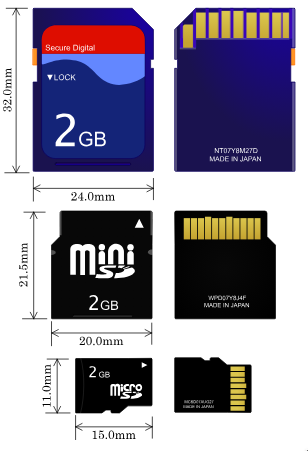
SD卡的速度等级标准当前在用的有两种，一种是普通速度标记，另一种是UHS速度标记，不同速度标准对应的总线模式也不同。现在SD协会又出了新的速度等级标准：Video Speed Class，使用UHS总线。SD卡的容量也有标准，从SDSC到SDUC。


SD卡的参数可以在SD卡的贴纸或者丝印上看到。

而microSD卡原名是TF卡(Trans-flash Card)，SD插槽兼容MMC卡，也可以通过飞线方式将eMMC接到SD插槽。

本文基于SD物理层简化规范第六版，主要研究解锁机制。
SDIO(Secure Digital Input Output)是由SD物理层规范修改而来，属于SD规范的扩展，除了支持SDIO规范的储存卡，还支持SDIO外围设备，例如WiFi模块、GPS模块、CMOS传感器模块等。
I/O informations
下面是MMC卡和SD卡引脚的对比

在不同的总线协议和传输模式下，这些引脚都负责不同的功能，本文主要研究SD模式的规范。在Type一栏，有如下定义：
- S - Power Supply
- I - Input
- O - Output using Pull Push Drivers
- PP - I/O using Pull Push Drivers
| Pin # | Name | Type | Description |
|---|---|---|---|
| 1 | CD/DAT3 | I/O/PP | Card Detect/Data Line [Bit3] |
| 2 | CMD | I/O/PP | Command/Response |
| 3 | VSS1 | S | Supply voltage ground |
| 4 | VDD | S | Supply voltage |
| 5 | CLK | I | Clock |
| 6 | VSS2 | S | Supply voltage ground |
| 7 | DAT0 | I/O/PP | Data Line [Bit0] |
| 8 | DAT1 | I/O/PP | Data Line [Bit1] |
| 9 | DAT2 | I/O/PP | Data Line [Bit2] |
下面是我们要研究的SD卡，SDSC，刚好最大2GB，上面印着M2B9 2GB Made in Japan，网上不能搜索到这些信息。

再看SD主控芯片，56X31B002 AC00145R，无法搜索到。
但是下面的存储芯片印有镁光Logo，在FBGA & Component Marking Decoder网站可以查询FPGA Code。是SLC NAND Flash，VBGA100封装，但是官网信息不太准确，只有16GB的版本。
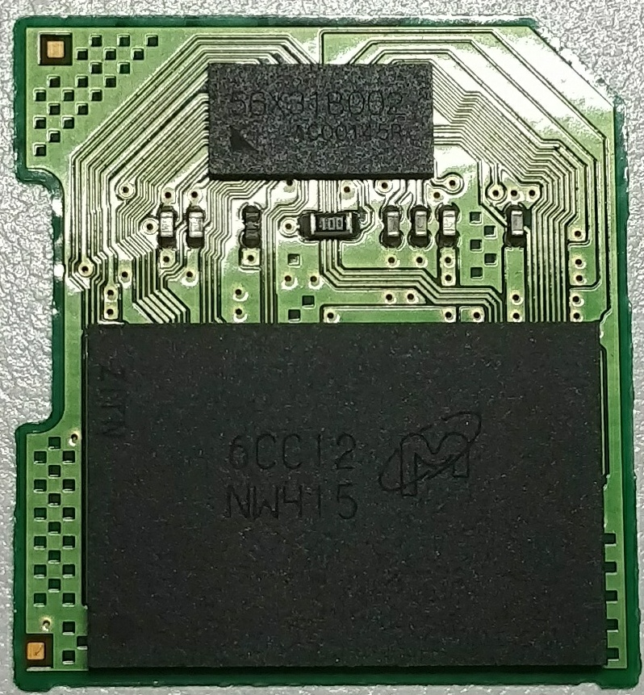
Registers
OCR,CID,CSD,SCR携带了卡的特定信息，RCA和DSR储存着实际的配置参数，SSR和CSR则携带状态信息。
因为规范制定者有强迫症，所以寄存器都是三位缩写，如果三位不能准确表达意思，就把R去掉。
| Name | length(bit) | Description | Optional |
|---|---|---|---|
| CID | 128 | Card Identification Data，包括厂商ID、OEM ID、产品名、产品编号、生产日期以及校验和 | 必选 |
| RCA | 16 | Relative Card Address，用于寻址，默认0x0000，SPI模式下不可用 | 必选 |
| DSR | 16 | Driver Stage Register，用于改善总线性能 | 可选 |
| CSD | 128 | Card Special Data，较为复杂，包含关于卡各种操作的条件信息：错误类型、最大数据访问时间、速率、DSR可用状态等 | 必选 |
| SCR | 64 | SD Configuration Register，包含了SD卡支持的特性，规范版本 | 必选 |
| OCR | 32 | Operation Condition Register，携带了当前电源信息 | 必选 |
| SSR | 512 | SD Status Register，包含当前SD卡特性和应用特性的状态信息，如总线数据宽度、安全模式、SD卡类型、速度等 | 必选 |
| CSR | 32 | Card Status Register，包含了当前卡执行命令的状态信息，体现在响应中，如上锁状态，错误信息等 | 必选 |
Architecture
卡内带有上电检测电路，与主控接口和存储区接口相连，每个引脚和卡主控相连，主控通过存储接口对存储区进行操作。

SDIO
而在SDIO规范中，定义了两种类型的SDIO卡：低速卡与高速卡，定义了SDIO卡的三种模式：
- SPI bus mode
- One-bit SD bus mode - 指令和数据分离的传输模式
- Four-bit SD bus mode - 高速卡支持，指令单独占用一个通道，使用另外4通道传输数据，SD卡的默认模式
SD Bus Protocol
SD总线通信主要由CMD(Command Token, 操作命令)、DAT(Data, 数据)组成。CMD和DAT由不同的通道并行传输，CMD和Response走同一条通道，CMD来自Host(上位机)，Response(响应)来自SD卡，Response只针对特定的CMD出现。
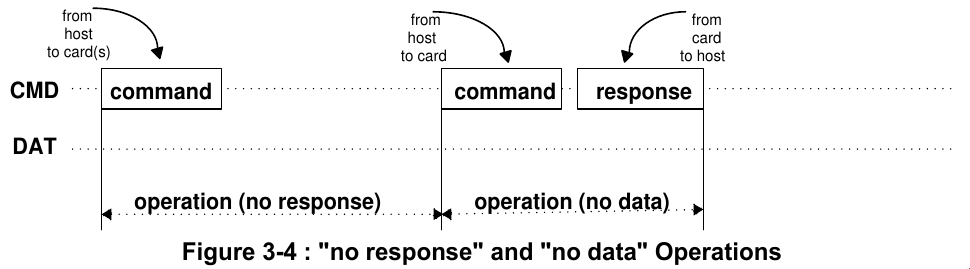
SD规定以块为单位进行读写操作，紧随着CMD后出现。每个数据块结尾带有CRC校验位。由终止操作由终止指令完成。

写过程会附带一个busy信号。

CMD Format
Command Token的长度是48-bit，起始位是0，传输位是1，表示来自Host的数据。Content携带了命令，地址信息以及参数。结尾带有7位的CRC(Cyclic Redundancy Check)，结束位是0。因为这个特性，Response的首个字节比CMD的首个字节小0x40。
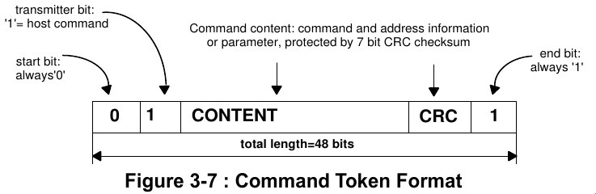
Response Token有四种场景，根据场景的不同采用不同的长度，分别是48-bit(R1,R3,R6)，136-bit(R2)。传输位是0，表示来自SD卡的数据。

Data Packet Format
通常模式下，数据通过DAT[0-3]引脚传输。和CMD一样，起始位0，结束位1，带有CRC校验。总线宽度默认1-bit。

CRC7
SD卡使用CRC7/MMC算法作为CMD的校验，公式如下

将多项式转化为二进制G(x)
1 | 10001001 |
在数据帧M(x)后补上长度位divisor-1，就是7，使用模2除法，数据帧除以10001001得到CRC

CRC16
SD卡使用CRC-16/CCITT-XMODEM算法作为Data的校验。宽总线模式下每行独立计算CRC，公式如下
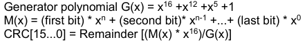
将多项式转化为二进制G(x)，第16位超出长度，忽略。
1 | 0001000000100001 |

Response Type
SD卡总共有五种类型的响应，SDIO支持附加的响应类型R4，R5。除R3以外，响应包的结尾都有CRC校验。
- R1 正常响应命令，可携带busy信号(R1b)
- R2 CID,CSD响应
- R3 OCR响应
- R6 RCA响应
- R7 卡接口条件响应
不同响应对应的格式
R1的参数部分是32位，对应了卡的状态，由于版本迭代问题，规范里没有明确说是CSR，CSR寄存器也是后面定义的。R2直接返回CID或CSD的数据。R3返回OCR的数据。

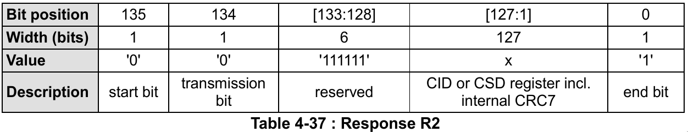

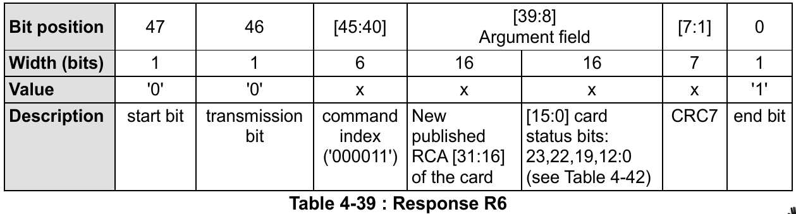
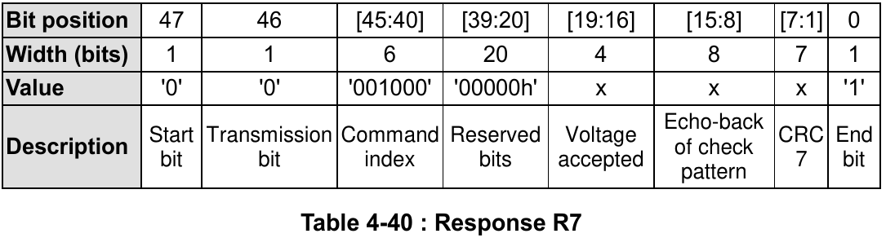
Function mode
SD卡的操作模式有两种种，默认是inactive：
- card indentification mode 卡认证模式
- data transfer mode 数据传输模式
UHS-II下和SD模式下，卡认证模式不同。
Command
Command主要有两种类型————广播和寻址，具体细分有如下四种:
- broadcast commands (bc), no response
- broadcast commands with response (bcr) (Note: No open drain on SD card)
- addressed (point-to-point) commands (ac), no data transfer on DAT lines
- addressed (point-to-point) data transfer commands (adtc), data transfer on DAT lines
CMD5，CMD52-54是SDIO特有的模式
最高有效位(Most Significant Bit, MSB)在前，最低有效位(Least Significant Bit, LSB)在后。
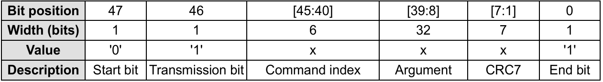
有如下分类：
| Class # | Name |
|---|---|
| 0 | Basic Commands |
| 1 | Command and Queue Function Commands |
| 2 | Block Oriented Read Commands |
| 3 | Reversed |
| 4 | Block Oriented Write Commands |
| 5 | Erase Commands |
| 6 | Block Oriented Write Protection Commands |
| 7 | Lock Card |
| 8 | Application Specific Commands |
| 9 | I/O Mode Commands |
| 10 | Switch Function Commands |
| 11 | Function Extension Commands |
Class 7 锁卡相关命令有三个，其中CMD16设定块长度，用来设置密码。CMD42进行上锁/解锁操作。上锁状态的卡可以响应Class 0的命令.

在SDSC卡中，可通过SET_BLOCK_LEN来指定数据的块长度。而在SDHC和SDXC卡中，块长度固定为512bytes。
Application-Specific Commands
Application-Specific Commands是Commands的扩展，CMD55是触发ACMD的条件，ACMD41也就是CMD55接一个CMD41。
ACMD41是初始化命令，设定HCS(Host Capacity Support)，决定SD卡的类型，电源控制以及电平。ACMD6是设置总线宽度，决定使用1-bit还是4-bits的Data传输。只有未解锁和传输状态才能使用ACMD6。
Status Information
SD卡状态信息可以在R1类型的响应里看到，比如CMD13，SD卡有三种状态信息：
- SD Status
- Card Status
- Task Status
下面是每一位的类型定义：
E - Error bit
S - Status bit
R - Detected and set for the actual command response
X - Detected and set during command execution. 上位机可以通过执行命令的响应获得状态信息
还有状态位的清除条件：
A - According to the card current status.
B - Always related to the previous command. 发送特定CMD来清除
C - Clear by read.
R1响应携带卡状态信息，长度32-bit，储存在CSR。下面是CSR每一位的定义，预留位已经省略。
| Bits | Identifier | Type | Value | Description | Clear Condition |
|---|---|---|---|---|---|
| 31 | OUT_OF_RANGE | E R X | ‘0’= no error ’1’= error |
The command’s argument was out of the allowed range for this card. | C |
| 30 | ADDRESS_ERROR | E R X | ‘0’= no error ’1’= error |
A misaligned address which did not match the block length was used in the command. | C |
| 29 | BLOCK_LEN_ERROR | E R X | ‘0’= no error ’1’= error |
The transferred block length is not allowed for this card, or the number of transferred bytes does not match the block length. | C |
| 28 | ERASE_SEQ_ERROR | E R | ‘0’= no error ’1’= error |
An error in the sequence of erasecommands occurred. | C |
| 27 | ERASE_PARAM | E R X | ‘0’= no error ’1’= error |
An invalid selection of write-blocksfor erase occurred. | C |
| 26 | WP_VIOLATION | E R X | ‘0’= no protected ’1’= protected |
Set when the host attempts to writeto a protected block or to the temporary or permanent write protected card. | C |
| 25 | CARD_IS_LOCKED | S X | ‘0’= card unlocked ’1’= card locked |
When set, signals that the card is locked by the host. | A |
| 24 | LOCK_UNLOCK_FAILED | E R X | ‘0’= no error ’1’= error |
Set when a sequence or passworderror has been detected in lock/unlock card command. | C |
| 23 | COM_CRC_ERROR | E R | ‘0’= no error ’1’= error |
The CRC check of the previous command failed. | B |
| 22 | ILLEGAL_COMMAND | E R | ‘0’= no error ’1’= error |
Command not legal for the cardstate | B |
| 21 | CARD_ECC_FAILED | E R X | ‘0’= no error ’1’= error |
Card internal ECC was applied butfailed to correct the data. | C |
| 20 | CC_ERROR | E R X | ‘0’= no error ’1’= error |
Internal card controller error. | C |
| 19 | ERROR | E R X | ‘0’= no error ’1’= error |
A general or an unknown error occurred during the operation. | C |
| 16 | CSD_OVERWRITE | E R X | ‘0’= no error ’1’= error |
Can be either one of the following errors: - The read only section of the CSD does not match the card content. - An attempt to reverse the copy (set as original) or permanent WP (unprotected) bits was made. |
C |
| 15 | WP_ERASE_SKIP | E R X | ‘0’= no protected ’1’= protected |
Set when only partial address space was erased due to existing write protected blocks or the temporary or permanent write protected card was erased. | C |
| 14 | CARD_ECC_DISABLED | S X | ‘0’= enabled ’1’= disabled |
The command has been executed without using the internal ECC. | A |
| 13 | ERASE_RESET | S R | ‘0’= cleared ’1’= set |
An erase sequence was cleared before executing because an out of erase sequence command was received. | C |
| 12:9 | CURRENT_STATE | S X | 0 = idle 1 = ready 2 = ident 3 = stby 4 = tran 5 = data 6 = rcv 7 = prg 8 = dis 9-14 = reserved 15 = reserved for I/O mode |
The state of the card when receiving the command. If the command execution causes a state change, it will be visible to the host in the response to the next command. The four bits are interpreted as a binary coded number between 0 and 15. |
B |
| 8 | READY_FOR_DATA | S X | ‘0’= not ready ’1’= ready |
Corresponds to buffer empty signaling on the bus. | A |
| 6 | FX_EVENT | S X | ‘0’= No event ’1’= Event invoked |
Extension Functions may set this bit to get host to deal with events. | A |
| 5 | APP_CMD | S R | ‘0’= enabled ’1’= disabled |
The card will expect ACMD, or an indication that the command has been interpreted as ACMD. | C |
| 3 | AKE_SEQ_ERROR(SD Memory Card app. spec.) | E R | ‘0’= no error ’1’= error |
Error in the sequence of the authentication process. | C |
12:9是4位长度，转成10进制，对应着卡的操作阶段
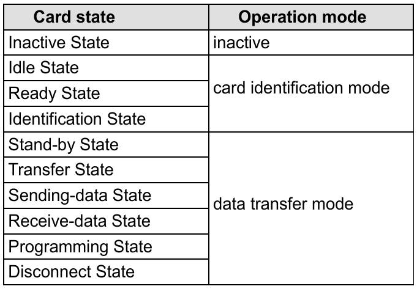
SD Protocol Sniff
等长布线(wiring length maching)是PCB设计领域的术语，一般用于高速IO，比如DDR。飞线尽量使用等长线，控制时钟线与其他信号线之间的距离，这也是SD卡厂商对于PCB设计的要求。
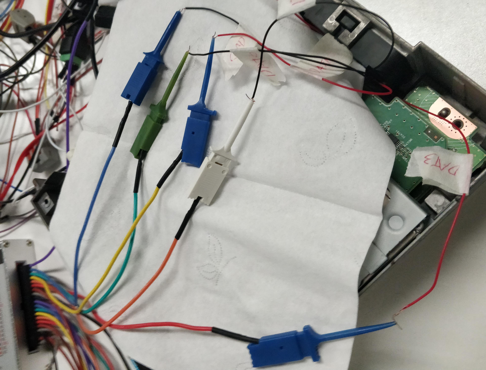
实际上SD高速模式下也就20MHz，是否使用等长线对数据的影响不大。最关键的还是逻辑分析仪的采样率，一开始使用100MHz采样率的逻辑分析仪经常乱码，后来换成500MHz采样率的LA5016就能正常使用。
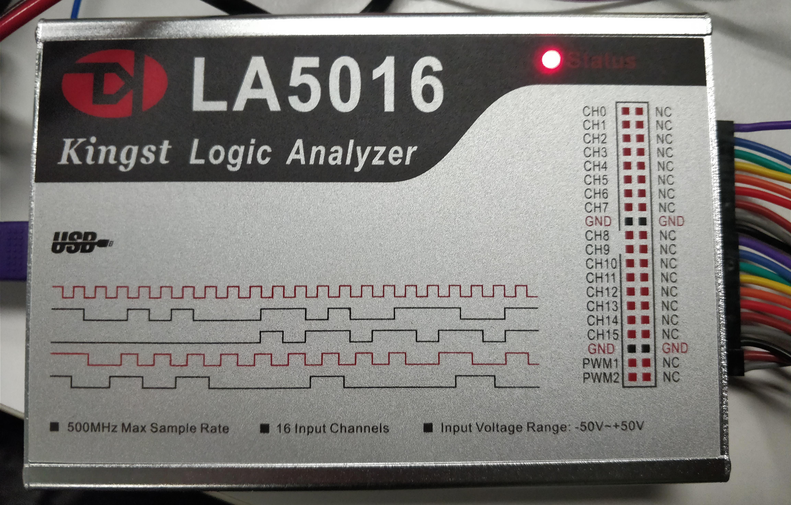
选择采样率和时间，另外选择电平。选择SDIO以及时钟上升沿(rising edge)触发。这样就能得到准确的逻辑电平。如下图，当上升沿对应的数据为0。
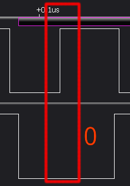
SD Unlock
解锁的会话只在一次上电中生效，下一次上电时SD卡会自动回到上锁状态。解锁过程首先使用CMD7选择卡，如果设置了FEP，那么需要解锁COP。然后使用CMD16设置所需块长度，8-bit解锁操作 + 8-bit密码长度 + 实际密码的长度，最后发送CMD42解锁。
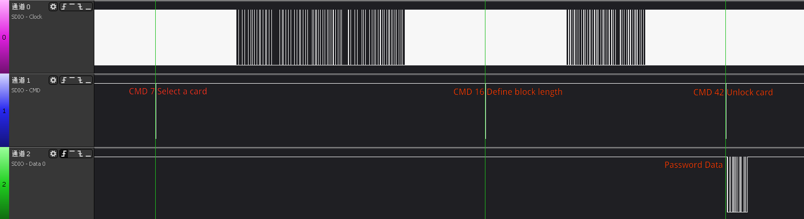
CMD 42
CMD42用于解锁设备，有V1.0和V2.0两个版本。解锁方式也有两种，一种是使用强制擦除密码(Force Erase Password, FEP)，另一种是使用密码解锁。只有COP(Card Ownership Protection)特性的SD卡，才带有非易失性的FEP寄存器。COP特性是SD规范6.0中新加的，市面上几乎很少有COP特性的SD卡。
根据CMD的格式，01代表CMD请求，101010代表42，推断出01101010是CMD42的第一个字节，也就是6A。
CMD42的参数前4个bit应该是0，CSR的对应状态位bit-25应该由1变为0，bit-24为0。
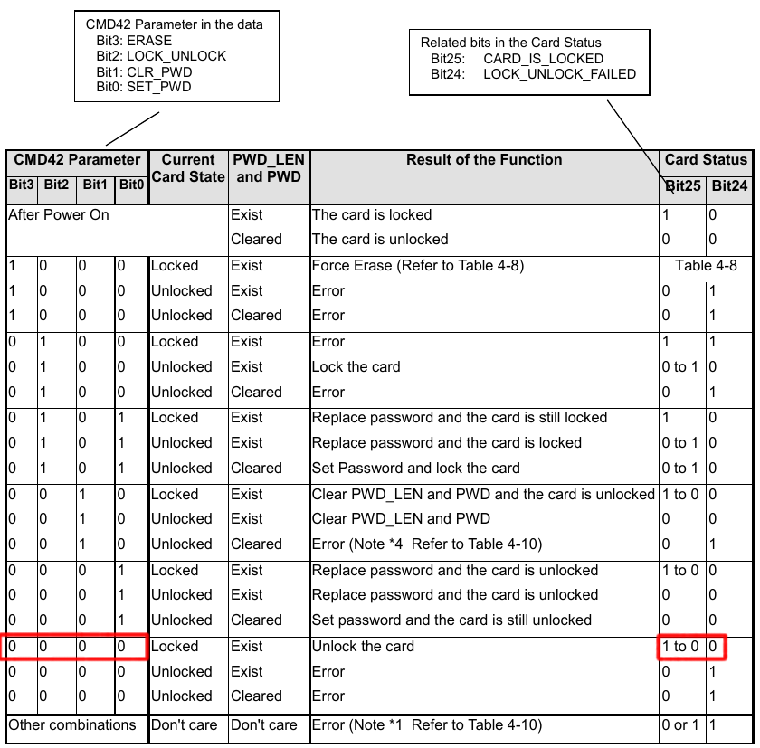
通过逻辑分析仪解析上位机和SD卡之间的通信数据，得到了下面的报文，Command Index,Arguments,CRC7都符合前面的定义。
1 | 6A 00 00 00 00 51 |
最后一个字节51可以通过CRC7校验
本文研究的目标设备较老，不支持COP，解锁上锁位的0代表解锁操作，1代表上锁。最后使用CMD42，因此CMD42的操作参数是00000000，也就是CMD42[00h]
CMD42的Data部分，第一个字节描述了具体的操作，前三位预留，一般置0，第四位表示COP特性，在解锁过程中，后面四位都应该是0。第二个字节表示Password Length区间为8-bit，单位是byte。因此password最大长度是128-bytes，因此密码长度最大16字节，从第三位开始都是密码数据，最后带上16位的CRC。
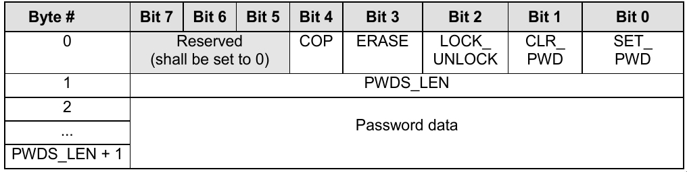
CMD7的地址随机
1 | 47 4B 47 00 00 6F |
CMD16命令如下, 倒数第二行便是参数SET_BLOCKLEN，设置块长度，必须是偶数长度。响应类型是R1，0b00010010的十进制为18，也就是2字节的参数加上16-bytes密码
1 | 50 00 00 00 12 2F |
CMD16的响应
1 | 10 02 00 09 00 07 |
CMD42响应的第一个字节为00101010也就是2A。响应类型是R1。
在逻辑分析仪抓取到了CMD42的响应
将Parameter字段转换成二进制，根据CSR定义，下面返回的状态是未解锁，ready,tran模式
1 | 2a 02 00 09 00 6f |
当CMD42的Data发送完成，再发送CMD13，根据CSR定义，下面返回的状态是已解锁，ready,tran模式，APP_CMD关闭
1 | 0D 00 00 09 00 07 |
Analyze Data
在KingstVIS找到Data0的信道，在CMD42后面对齐上升沿截取区间，导出时钟信道和Data0信道为TXT。
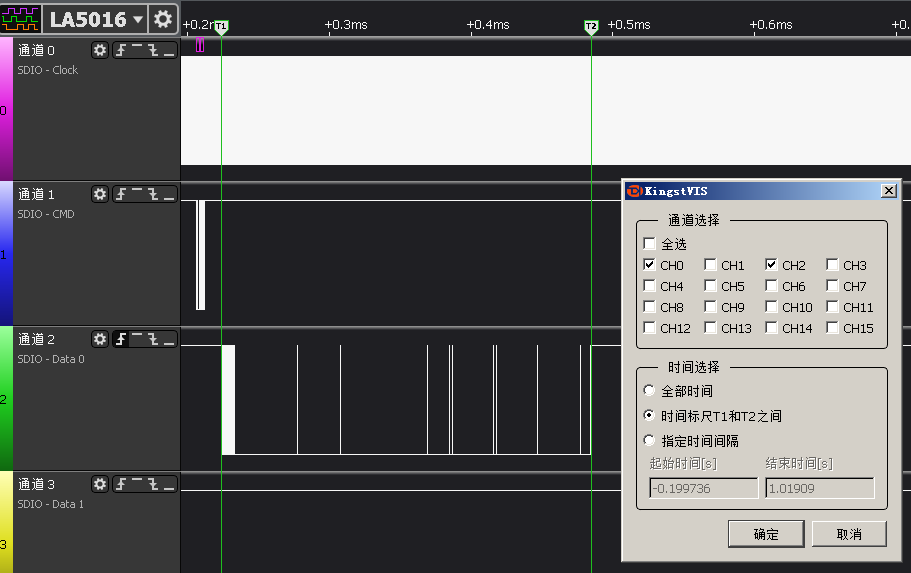
最后导出的数据实际上还是csv。在KingstVIS里选择CSV导出则为倒序，所以才选择TXT格式。这里字符编码是ANSI，在Linux下会乱码，所以把Title删除。
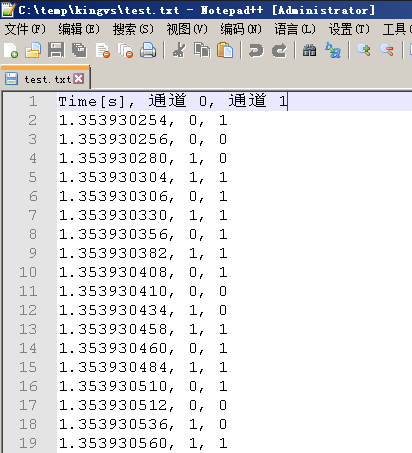
通过下面的脚本，可以将Data0数据打印成可读数据。
1 | #!/usr/bin/env python3 |
去掉第一位起始位，解析CMD42 Data结构，再进行CRC校验，校验成功。
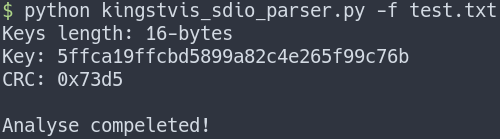
密码如下
1 | 5ffca19ffcbd5899a82c4e265f99c76b |
MMC Utils
下一步是写SD解锁工具，镁光的官方文档提供了添加上锁解锁功能的Demo，通过修改mmc-utils可以实现解锁。
1 | git clone git clone git://git.kernel.org/pub/scm/linux/kernel/git/cjb/mmc-utils.git |
mmc-utils/mmc.h
1 |
mmc-utils/mmc.c
1 | {do_lock_unlock, -3, |
mmc-utils/mmc_cmds.h
1 | //lock/unlock feature implementation |
实际上是通过ioctl控制的，编译之后，可以上锁，但是再也无法解锁成功，只能换一种方式。
https://github.com/torvalds/linux/blob/master/include/uapi/linux/mmc/ioctl.h
1 | sudo ./mmc scr read /sys/bus/mmc/devices/mmc0:aaaa/ |
Modify the kernel module
因为第三方工具无法实现，现在只能修改内核模块了。本人的操作系统是Arch Linux，MMC驱动属于内核模块，所以不需要重新编译整个内核。而不是像Ubuntu直接builtin。
Arch Linux的内核模块目录如下，我的电脑是HP 840G3，SD卡使用PCI通道，主要会涉及下面三个驱动。
1 | /lib/modules/$(uname -r)/kernel/drivers/mmc/core/mmc_core.ko.xz |
如果重新下载官方源码编译内核模块，会出现奇怪的错误。首先是vermagic匹配问题，内核版本，处理器特性不匹配则不允许挂载。因为Linux 3.7后加入了模块签名机制，可以通过modinfo查看系统自带的内核模块，没有签名会导致无法挂载。
1 | $ modinfo mmc_core |
我们可以在/usr/lib/modules/$(uname -r)/build/目录进行编译，无需另外配置。只需要把MMC的core代码拷贝到目标目录下。就可以直接make，然后重新挂载MMC内核模块驱动。
1 | cp ./core/* /usr/lib/modules/$(uname -r)/build/drivers/mmc/core/ |
Add Unlock Function
在mmc_ops.h加入unlock_mmc声明
1 | int unlock_mmc(struct mmc_card *card, u8* key_buf,int key_len); |
随后编写具体实现，首先设定块长度，随后发送CMD42 ADTC命令。
1 | int unlock_mmc(struct mmc_card *card, u8* key_buf,int key_len) |
在sd.c的mmc_sd_setup_card之前，加入解锁功能。
1 | // 检查是否上锁 |
在card.h加入宏定义
1 |
在core.c的mmc_wait_for_req_done插桩调试，随后通过dmesg查看记录
1 | printk("[mmc] CMD %d err number: %d", mrq->cmd->opcode, mrq->cmd->error); |
UHS-I
UHS-I(Ultra High Speed Phase I，超高速)是实现 SDHC 和 SDXC 卡高速数据传输的的总线接口。支持LVS，有七种操作模式。
- DS - Default Speed up to 25MHz 3.3V signaling
- HS - High Speed up to 50MHz 3.3V signaling
- SDR12 - SDR up to 25MHz 1.8V signaling
- SDR25 - SDR up to 50MHz 1.8V signaling
- SDR50 - SDR up to 100MHz 1.8V signaling
- SDR104 - SDR up to 208MHz 1.8V signaling
- DDR - DDR up to 50MHz 1.8V signaling
首先用CMD0选择总线模式：SPI模式和SD模式。1.8V的信号模式只能进入SD模式。
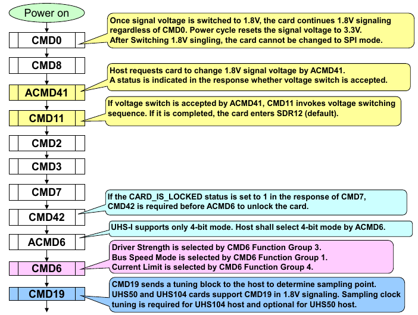
可以看到并没有解锁成功，在CMD42出现了-22的错误。
1 | $ dmesg -l 0,1,2,3,4,5,6,7 |
Linux系统错误号-22即EINVAL。最后跟到了drivers/mmc/host/sdhci.c里
1 | filename: drivers/mmc/core/core.c |
因为是笔记本电脑，所以相关命令在Realtek的SD读卡器驱动里，而在手机中是drivers/mfd/rtsx_pcr.c。
1 | int rtsx_pci_send_cmd(struct rtsx_pcr *pcr, int timeout) |
1 | cp ./drivers/misc/cardreader/* /usr/lib/modules/$(uname -r)/build/drivers/misc/cardreader/ |
通过打印rtsx_pci_add_cmd的参数，可以确定传入的key没有错误
1 | sd_cmd_set_sd_cmd |
Unlocking SD Card by Raspberry Pi
1 | sudo dd bs=4M if=/home/cygnus/IMG/2018-06-27-raspbian-stretch-lite/2018-06-27-raspbian-stretch-lite.img of=/dev/mmcblk0 status=progress conv=fsync |
下载对应版本的树莓派源代码，并把工具链加入环境变量
1 | git clone --depth=1 --branch rpi-4.14.y https://github.com/raspberrypi/linux |
使用BCM2709配置，并在MENU CONFIG里把SD卡驱动和MMC驱动变为内核模块形式。最后编译zImage，模块，设备树，然后更新SD卡里的文件。
1 | KERNEL=kernel7 |
更新内核
1 | sudo cp /run/media/cygnus/boot/$KERNEL.img /run/media/cygnus/boot/$KERNEL-backup.img |
更新设备树
1 | sudo cp arch/arm/boot/dts/*.dtb /run/media/cygnus/boot/ |
在boot config加入下面配置
1 | dtoverlay=sdio,poll_once=off |
| Name | SD Card | Raspberry Pi Pin Num |
|---|---|---|
| VCC | 4 | 17 |
| GND | 6 | 20 |
| CLK/SCLK | 5 | 15 |
| CMD/MOSI | 2 | 16 |
| DAT0/MISO | 7 | 18 |
| DAT1 | 8 | 22 |
| DAT2 | 9 | 37 |
| DAT3/CS | 1 | 13 |
Reference
SD Simplified Specifications
Wiki - Secure_Digital
SD Standard Overview